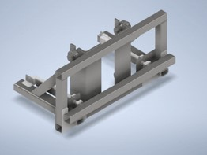
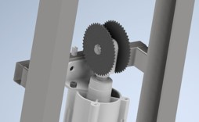
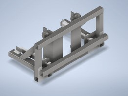
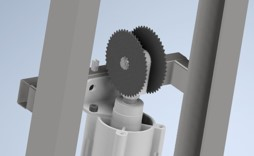
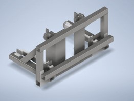
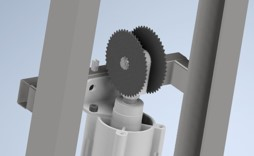

Kaloda emelő


Az kalodákat, amik a hőkezelők és a cella között ingáznak párban mozgatják. Kettő van egymásra helyezve így az alső szint megrakása nem lehetséges. A rakodhatóság és a rövid ciklusidő érdekében meg kell emelni és kellően magasra kell emelni a kalodákat, hogy gyorsjárati mozgásban is be tudjanak állni a robotok a pozícióba. Ezt pneumatikus munkahengerekkel, csigarendszerrel és a henger végére szerelt lánckerekkekkel lehetett kölcséghatékonyan megoldani. A munkahenger sebességének a duplájával tudja emelni az üres kalodákat. Ez is mint minden egyéb részegység a 10 perces ciklusidő betartása végett lett így kialakítva. Mivel a kalodák leeresztése és föltöltése illetve leürítése után targoncával el kell távolítani minden ciklusban kétszer a kalodást. ehhez az emelő mechanizmusnál meg kell oldani, hogy ne akadályozza kaloda mozgását pakolás során viszont rögzítse a kalodát emelés során. Erre a feladatra a középső képen látható emelő keret lett kialakítva, amit két közepes lökető kis erőt kifejtő pneumatikus munkahenger hajt. A kis erő megfelelő mivel ez nem vesz részt az emelésben csak a kapcsolat oldhatóságáért felel.
| FŐOLDAL | Rázóasztal | Beütő állomás | Megfogó |